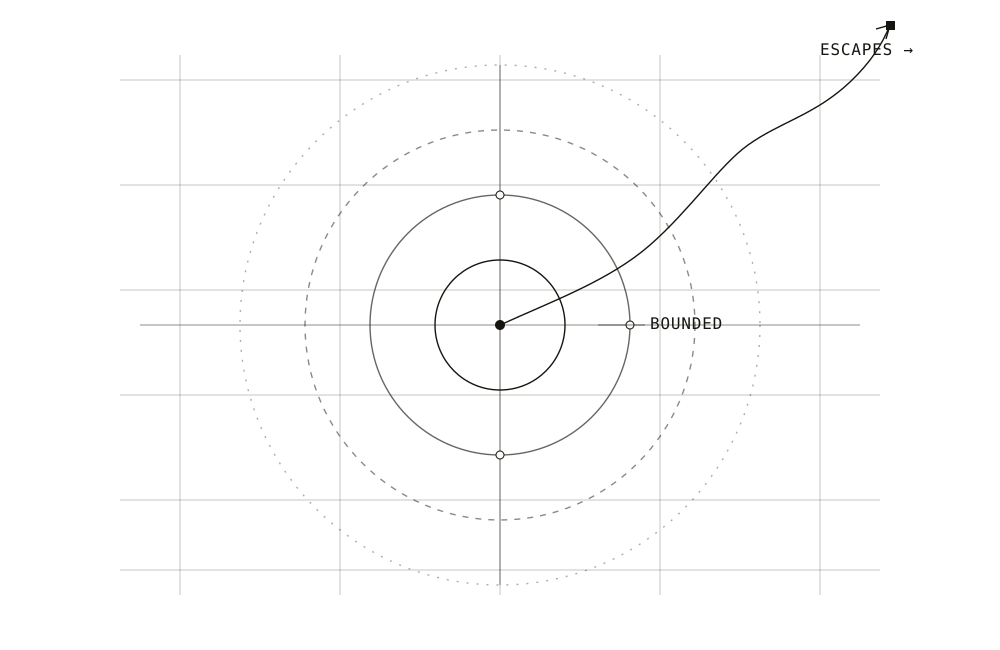

Where Does Computation End?
A journey from the Halting Problem and Turing machines to hypercomputation, physical computation, and the question of whether reality can compute beyond Turing.
FIG_001[ HALTING BOUNDARY ]

A NOTE ON PHYSICAL SYSTEMS, MODELS, AND THE LIMITS OF EFFECTIVE DESCRIPTION.
The map is not the territory.
— N. Wiener